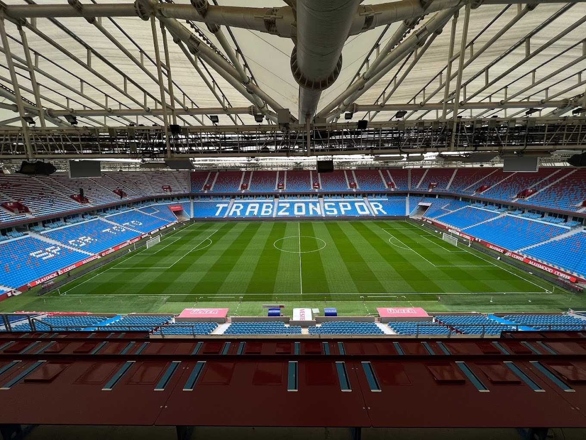

Şenol Güneş Spor Kompleksi, kısaca Akyazı Stadyumu veya sponsorluk anlaşması gereği Papara Park, Trabzon'un Ortahisar ilçesi, Akyazı mahallesinde yer alan bir futbol stadyumudur. Süper Lig kulüplerinden Trabzonspor'un maçlarına ev sahipliği yapmaktadır. Stadın kapasitesi 41.131 kişiliktir. Stat, denize dolgu yapılan bir alanda inşa edildi ve inşaatı yaklaşık üç yıl sürdü. Stadyumdaki ilk maç 29 Ocak 2017'de Trabzonspor ile Gaziantepspor arasında oynandı ve bu maçı Trabzonspor 4-0 kazandı. Bu maçtaki ilk golü atan Fabián Castillo, stattaki ilk golü atan futbolcu oldu. 8 Ağustos 2023 tarihinde stadyuma Papara şirketi sponsor oldu ve stadyumun yeni ismi 5 yıllığına Papara Park oldu. Trabzonspor'un maçlarını oynadığı Hüseyin Avni Aker Stadyumu 1951 yılında inşa edilmişti. Bu tarihten itibaren birçok kez onarımdan geçirilen stat çok eskimesi, taraftarın maçlara ilgi göstermemesi gibi sebeplerden ötürü tartışılmaya başlandı. Trabzonspor'a yeni bir stat yapma fikri ilk olarak Nuri Albayrak döneminde ortaya atıldı. Albayrak, Mart 2007'de açıkladığı projede Avni Aker Stadı'nın yıkılıp aynı yere yeniden yapılacağını açıkladı. Ancak birkaç ay sonra yaptığı açıklamada aynı yere stat yapmanın şehri boğacağını belirtip yeni stadın Akyazı beldesinde dolgu alana yapılabileceğini belirtti. Projenin tanıtılmasından sonra pek fazla ilerleme kaydedilemeyen proje için somut adımlar 2010 yılında Sadri Şener'in başkanlığı döneminde atılabildi. TOKİ Akyazı'da yapılacak stat için gerekli olan dolgu ve tahkimat işi ihalesini 22 Eylül 2010'da Ankara'da yaptı. 12 firmanın teklif verdiği ihaleyi 36 milyon 950 bin TL ile en düşük teklifi veren Öztaş & Sistem İnşaat Ortaklığı kazandı. Stadın dolgu işlemi 2011 yılının ocak ayında başlamasına rağmen üç ay sonra TMMOB Trabzon şubesinin Danıştay 6. Dairesi'ne yaptığı başvuru sonucunda proje hakkında yürütmeyi durdurma kararı verildi ve çalışmalar durdu. Çevre ve Şehircilik Bakanlığı'nın karara itirazının ardından Danıştay 6. Dairesi 6 Ekim 2011'de yürütmeyi durdurma kararını kaldırdı ve Akyazı'da dolgu çalışmaları yeniden başladı. Stadın dolgusu gecikmeler nedeniyle 2013 yılının başlarında tamamlanabildi. Stadın yapımı için düzenlenen ve 16 firmanın dosya verdiği ön yeterlilik ihalesi 14 Şubat 2013'te Ankara'da yapıldı. 2 Mayıs'ta yapılan stat ihalesine 231 milyon 991 bin lira muhammen bedel belirleyen TOKİ 9 firmadan teklif aldı. En düşük teklifi 193 Milyon 061 bin TL ile Sarıdağlar & STY & Yertaş Ortaklığı verdi. TOKİ tarafından yapılan sözleşme ile projeyi Sarıdağlar & STY & Yertaş Ortaklığı aldı. Stadyumun inşaatı dönemin başbakanı olan Recep Tayyip Erdoğan'ın katıldığı bir temel atma töreniyle 24 Kasım 2013'te başladı. İnşaatın tamamlanması yaklaşık üç yıl sürdü. Stadın açılışı Cumhurbaşkanı Recep Tayyip Erdoğan ve Katar Emiri Temim bin Hamed es-Sani’nin katılımıyla 18 Aralık 2016 tarihinde yapılan bir organizasyonla gerçekleştirildi. Stadyuma Cumhurbaşkanı tarafından Trabzonspor'un efsane futbolcusu Şenol Güneş'in adı verildi ve stadyumun resmî adı Şenol Güneş Spor Kompleksi olarak açıklandı. Açılış organizasyonun sonunda Trabzonspor'un eski futbolcuları bir gösteri maçı yaptı. Bordo ve Mavi diye adlandırılan takımların teknik direktörlüklerini Yılmaz Vural ve Giray Bulak yaptı. Bordo mavili ekip, Şenol Güneş Spor Kompleksi'ndeki ilk maçını 29 Ocak 2017'de Gaziantepspor'a karşı oynadı. 22.654 kişinin izlediği maçı Trabzonspor 4-0 kazanırken stadyumdaki ilk golü Fabián Castillo attı. COVID-19 pandemisi nedeniyle Türkiye Futbol Federasyonu tarafından tüm maçların seyircisiz oynanacağının açıklanmasından sonra Trabzonspor sezonun kendi sahasında kalan dört maçını seyircisiz oynadı. Bu yasak 2020-21 sezonunun tamamında devam etti. Trabzonspor, şampiyon olduğu 2021-22 sezonunda maçlarını 28.874 seyirci ortalamasıyla oynadı. Şampiyonluğunu ilan ettiği 30 Nisan 2022'deki Antalyaspor maçını 38.917 kişi izledi ve stadyumdaki seyirci rekoru kırıldı. Kulüp, maçtan sonra sahada yapılan şampiyonluk kutlamalarının ardından zeminin ağır hasar alması nedeniyle kendi evindeki bir sonraki maç olan Altay karşılaşmasını Atatürk Olimpiyat Stadyumu'nda oynadı. Trabzonspor, 17 Mart 2024'te oynadığı Fenerbahçe maçında taraftarının neden olduğu saha olayları nedeniyle altı maç saha kapatma cezası aldı ve o sezonun kendi evinde kalan maçlarını seyircisiz oynadı. Stadın isim haklarını stat açıldıktan bir ay sonra Trabzonspor başkanı Muharrem Usta'nın sahibi olduğu Medical Park aldı ve stadın adı Medical Park Arena oldu. Recep Tayyip Erdoğan'ın, "arena" kelimesinin stadlardan kaldırılması konusunda talimat vermesinin ardından Haziran 2017'de stadın adı Medical Park Stadyumu olarak değiştirildi. Medical Park ile olan stadyum isim sponsorluğu ve diğer reklam haklarını kapsayan resmî sözleşme 2 Ağustos 2017 tarihinde başlayıp 5 yıllık süre boyunca geçerli oldu. Anlaşma kapsamında Medical Park, Trabzonspor'a 29.5 milyon euro ödedi. Kulüp, Medical Park ile olan sözleşme sona erdikten sonra 2022-23 sezonu için herhangi bir isim sponsorluğu anlaşması yapmadı. Ağustos 2023'te stadyumun isim sponsorluğu için 5 yıllığına Papara ile anlaştı. Stadyum isim sponsorluğu ve diğer reklam hakları için Papara'nın Trabzonspor'a yıllık 1 milyar 416 milyon TL (duyuru tarihinde 47.8 milyon euro) ödeyeceği açıklandı. 2023-24 sezonu öncesinde stadyumun adı Papara Park olarak değiştirildi. Türkiye millî futbol takımı bugüne kadar stadyumda sadece bir maç oynadı. 2018-19 UEFA Uluslar Ligi kapsamında 7 Eylül 2018'de Rusya'ya karşı oynanan maç 2-1 kaybedildi. Türkiye adına stadyumdaki ilk golü Serdar Aziz attı.